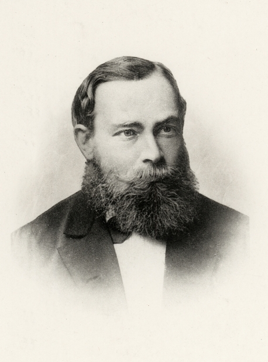

∀

Trinity College Dublin
Coláiste na Tríonóide, Baile Átha Cliath
The University of Dublin
LIU33008 · Semantics II
Week 4
Attitude Reports
Dr. Thomas Stephen
School of Linguistic, Speech & Communication Sciences
Semester 1 · Michaelmas
This week
What it is to believe something
Modals quantify over a set of worlds that a conversational background picks out, so must and can say that a proposition holds at all or some of those worlds.
The verbs believe, know and want quantify in the same way over worlds fixed by the subject’s beliefs, knowledge and desires.
Figures: Frege · Quine · Barcan Marcus · Hintikka · Kaplan
Today
Empirical
- De re and de dicto
- Russell’s yacht
- Specific and non-specific
- Ralph and Ortcutt
- Closure
Historical
- Frege
- Quine
- Barcan Marcus
- Hintikka
Formal
- Doxastic alternatives
- Believe, know, want
- Composition
- Interrogative complements
- Noun phrase complements
- Attitudes and axioms
- Problems for extensional semantics
- Scope
- Other notations
Typological
- Pronouns in reports
- Logophoric pronouns
- Kaplanian monsters
- A monster in the tree
- Amharic and Zazaki
This week
Readings
von Fintel & Heim, Intensional Semantics, ch. 2, §2.1 “Attitudes”. Textbook
Coppock & Champollion, Invitation to Formal Semantics, §12.5.2 “Propositional attitudes” and §12.6 “De dicto vs. de re”. Textbook
Hintikka (1969), “Semantics for propositional attitudes”. Classical
Anand & Hacquard (2013), “Epistemics and attitudes”, Semantics and Pragmatics 6. Contemporary
Recap
Problems for extensional semantics
Clauses(1) Sue thinks that Harry is single.
The complement has the same truth value as Dublin is in Ireland. Substitution of a part can change the truth value of the whole.
Names(2) Anna believes that the Morning Star is visible at dawn.
The Morning Star is the same planet as the Evening Star, and swapping the names changes the truth value.
Descriptions(3) Little Emma thinks her house is the tallest building in New York.
It does not follow that she thinks her house is One World Trade Center.
Empty predicates(4) Sue believes that jackalopes are fierce.
Jackalope and unicorn both have the extension \(\emptyset\), and believing in one is not believing in the other.
I
Empirical
LENS 01 / 04 · LIU33008 · Week 4
Attitude verbs
Belief, knowledge and desire reports.
Oedipus
(5)
Oedipus wanted to marry Jocasta.
(6)
Oedipus wanted to marry his mother.
Empirical
De re and de dicto
De dicto, ‘of the (indirect) speech’: the description is understood as part of the content of the attitude, from the subject’s point of view. On this reading (6) says that Oedipus wanted I marry my mother.
De re, ‘of the thing’: the description is the speaker’s way of picking out an individual in the actual world, and the attitude is about that individual. On this reading (6) says that, of the woman who is in fact his mother, Oedipus wanted to marry her.
The terms de re and de dicto first appear in Aquinas.
Empirical
Russell’s yacht
A guest, on first seeing a touchy owner’s yacht
(7)“I thought your yacht was larger than it is.”the guest
(8)“No, my yacht is not larger than it is.”the owner
The guest meant that the size he had thought the yacht to be was greater than its actual size. The description the size it is takes wide scope over thought, and picks out the actual size, de re.
The owner took the description inside the belief, de dicto, so the guest was reported as thinking that the yacht was larger than itself, which is a contradiction.
Russell uses the language of primary and secondary occurrence where we would now say wide scope and narrow scope.
Russell (1905), “On denoting”, Mind 14.
Empirical
Specific and non-specific
An indefinite under want
(9)Mary wants to marry a Norwegian.
(10)… She met him in Bergen last summer.specific · de re
(11)… She hasn’t met one yet.non-specific · de dicto
On the de dicto reading, continued by (11), no particular Norwegian need exist. On the de re reading, continued by (10), one does.
Quine (1956) has I want a sloop. In the notional sense the speaker wants “mere relief from slooplessness”; in the relational sense there is a sloop the speaker wants.
Quine (1956), “Quantifiers and propositional attitudes”, Journal of Philosophy 53.
Ralph and Ortcutt
There is a man in a brown hat whom Ralph has glimpsed several times under questionable circumstances, and Ralph suspects that he is a spy. There is also a grey-haired man, vaguely known to Ralph as a pillar of the community, whom Ralph remembers seeing only once, at the beach. Ralph does not know it, but the two men are one and the same: Bernard J. Ortcutt.
(12)
Ralph believes that the man in the brown hat is a spy.
(13)
Ralph believes that the man seen at the beach is not a spy.
(14)
Ralph believes that Ortcutt is a spy.
Empirical
Ralph and Ortcutt
On their de dicto readings (12) and (13) are both true and consistent, because Ralph’s belief worlds contain two different men.
On their de re readings both are true as well: Ralph believes of Ortcutt that he is a spy, and believes of Ortcutt that he is not a spy.
(14) is true de re, since Ralph believes of Ortcutt that he is a spy. It is false de dicto, since Ralph would sincerely say that Ortcutt, the man at the beach, is no spy.
(15)There is someone whom Ralph believes to be a spy.quantifying into a belief report
Quine takes (15) to be true. It quantifies into the belief report, and it holds although Ralph assents to no contradiction.
Quine (1956), “Quantifiers and propositional attitudes”, Journal of Philosophy 53: Ralph, Ortcutt and sentence (15).
Empirical
Closure
Premise and conclusion
(16)Anna believes that the shop opens at nine.
(17)Anna believes that the shop opens before ten.follows, plausibly
(18)Anna believes that 2 + 2 = 4.
(19)Anna believes that the prime factors of 1,234,567 are 127 and 9,721.does not follow
II
Historical
LENS 02 / 04 · LIU33008 · Week 4
Frege, Quine, Barcan Marcus, Hintikka
Reference in reports.
Historical
Gottlob Frege

Gottlob Frege
1848 – 1925
Über Sinn und Bedeutung (1892) separates reference from sense. The Morning Star and the Evening Star have one reference, Venus, and two senses, two ways of presenting it.
In reported speech, words refer to their customary sense. Frege calls this their indirect reference.
In (2), under believes, the Morning Star and the Evening Star refer to different senses, so substituting one for the other can change the truth value.
Frege (1892), “Über Sinn und Bedeutung”, Zeitschrift für Philosophie und philosophische Kritik 100: sense, reference and indirect reference.
Historical
W. V. O. Quine
W. V. O. Quine
1908 – 2000
Quine (1953) calls a position referentially opaque when substitution and existential generalisation fail there. Positions inside attitude reports are his main case.
Quine (1956) distinguishes the notional and relational senses of believe and want, and tells the story of Ralph and Ortcutt.
Relational belief needs quantifying in, as in (15). Quine allows it as a relation among Ralph, Ortcutt and the property of being a spy.
Quine (1953) tolerated necessity as an operator on whole sentences, and rejected quantified modal logic as a return to “the metaphysical jungle of Aristotelian essentialism”. In 1992 he signed the letter to The Times opposing an honorary doctorate for Jacques Derrida at Cambridge.
Quine (1953), “Reference and modality”, in From a Logical Point of View, Harvard University Press; Quine (1956), Journal of Philosophy 53; Smith et al. (1992), letter, The Times, 9 May.
Historical
Ruth Barcan Marcus
Ruth Barcan Marcus
1921 – 2012
Barcan (1946) gave the first systematic quantified modal logic, adding quantifiers to C. I. Lewis’s systems of strict implication.
Barcan formula: \(\Diamond \exists x\, \varphi \rightarrow \exists x \Diamond \varphi\), equivalently \(\forall x \Box \varphi \rightarrow \Box \forall x\, \varphi\). It is valid on models in which the domain of individuals does not grow along the accessibility relation.
She defended quantifying into modal contexts against Quine. Barcan (1947) proved the necessity of identity, and Marcus (1961) treated proper names as tags that refer directly, without descriptive content.
Barcan (1946), Journal of Symbolic Logic 11: the Barcan formula. Barcan (1947), Journal of Symbolic Logic 12: necessity of identity. Marcus (1961), “Modalities and intensional languages”, Synthese 13.
Historical
Jaakko Hintikka
Jaakko Hintikka
1929 – 2015
Knowledge and Belief (1962) writes \(K_a p\) and \(B_a p\) for knowing and believing, and defends the KK principle: whoever knows something knows that they know it.
Hintikka (1969) says that an attitude divides the possible worlds into those compatible with it and the rest. To believe \(p\) is for \(p\) to hold in all the compatible worlds.
This is the same quantification as \(\Box\), and Hintikka and Kripke reached worlds semantics at the same time. Hintikka built his semantics from model sets and later from semantic games, without Kripke frames.
Hintikka semantics: the semantics on which verbs like believe and know quantify over possible worlds, as modals do.
Hintikka (1962), Knowledge and Belief, Cornell University Press; Hintikka (1969), “Semantics for propositional attitudes”, in Davis, Hockney & Wilson (eds), Philosophical Logic, Reidel.
III
Formal
LENS 03 / 04 · LIU33008 · Week 4
Attitudes as quantifiers
Hintikka’s semantics for believe, know and want.
Formal
Doxastic alternatives
(20)Anna believes that it is raining.
Doxastic alternatives: \(\mathrm{Dox}_a(w)\) is the set of worlds compatible with everything \(a\) believes in \(w\). These worlds are \(a\)’s doxastic alternatives in \(w\).
Anna believes that it is raining is true at \(w\) iff \(\mathrm{Dox}_{\mathit{Anna}}(w) \subseteq \sem{\textit{it is raining}}\). In the diagram it is true although \(w_0\) itself is dry, since belief does not require truth.
Hintikka (1969), “Semantics for propositional attitudes”: the alternativeness relation. The notation \(\mathrm{Dox}_a(w)\) follows Heim (1992), Journal of Semantics 9.
Formal
Believe, know, want
\(\sem{\textit{believe}}^{w} = \lambda p.\,\lambda x.\ \mathrm{Dox}_x(w) \subseteq p\)
believe\(\boldsymbol{\mathrm{Dox}_x(w)}\)
the worlds compatible with what \(x\) believes in \(w\)
know\(\boldsymbol{\mathrm{Epi}_x(w)}\)
the worlds compatible with what \(x\) knows in \(w\)
want\(\boldsymbol{\mathrm{Bul}_x(w)}\)
the worlds in which \(x\)’s desires in \(w\) are met
\(\mathrm{Dox}_x(w)\) defines \(R(w)\), the accessibility relation, relative to a person and a world.
Formal
Composing with a truth value
With the CP at type \(t\), the complement contributes only a truth value, so \(\sem{\textit{that Harry is single}} = \sem{\textit{that Dublin is in Ireland}} = 1\) and the two VPs in (1) receive the same denotation. The tree predicts that whoever thinks Harry is single thinks Dublin is in Ireland.
Compositionality: the meaning of the VP is determined by the meanings of its parts and the way they combine. The parts are the verb and the CP, so the fault lies in what the CP contributes.
Formal
Composing with a set of worlds
\(\sem{\textit{that it is raining}}^{w} = \{w' : \textit{it rains at } w'\}\)
\(\sem{\textit{believes}}^{w} = \lambda p.\,\lambda x.\ \mathrm{Dox}_x(w) \subseteq p\)
\(\sem{\textit{believes that it is raining}}^{w} = \lambda x.\ \mathrm{Dox}_x(w) \subseteq \{w' : \textit{it rains at } w'\}\)
\(\sem{\textit{Anna believes that it is raining}}^{w} = 1 \text{ iff } \mathrm{Dox}_{\mathit{Anna}}(w) \subseteq \{w' : \textit{it rains at } w'\}\)
Interrogative complements
(21) a.
Anna knows [that Ben called].
b.
Anna knows [whether Ben called].
(22) a.
Anna believes [that Ben called].
b.
*Anna believes [whether Ben called].
(23) a.
*Anna wonders [that Ben called].
b.
Anna wonders [whether Ben called].
Formal
Responsive predicates
Responsive: know takes a declarative or an interrogative complement, as in (21a) and (21b).
Rogative: wonder takes only interrogatives, as in (23).
Anti-rogative: believe takes only declaratives, as in (22).
The standard Hamblin semantics says a question denotes the set of its possible answers, so whether Ben called is \(\{p, \neg p\}\), of type \(\langle\langle s,t\rangle,t\rangle\). The entry for know above expects a single proposition, and the interrogative complement does not fit it either.
Noun phrase complements
(24)
Anna believes the rumour.
(25)
Anna believes Mary.
(26)
Anna wants a sloop.
(27)
Anna knows the answer.
Formal
Noun phrase complements
The entries above expect an argument of type \(\langle s,t\rangle\), and a DP has type \(e\), so none of (24) to (27) composes as it stands.
Hidden clause: want a sloop is analysed as want to have a sloop, and believe Mary as believe what Mary says. The hidden clause also recovers Quine’s two readings of (26).
Content nouns: a rumour or a story has a propositional content, and the verb applies to that content.
Concealed question: know the answer is analysed as know what the answer is.
The modern modifier analysis: propositions are not the arguments of these verbs at all. They are modifiers of an argument of type \(e\).
Axioms for know and believe
T
\(\Box p \rightarrow p\)
D
\(\Box p \rightarrow \Diamond p\)
4
\(\Box p \rightarrow \Box\Box p\)
5
\(\neg\Box p \rightarrow \Box\neg\Box p\)
Formal
Attitudes and axioms
AxiomknowbelieveCondition
T\(\Box p \rightarrow p\)
Yes.
No.
reflexive
D\(\Box p \rightarrow \Diamond p\)
Yes.
Yes. Beliefs are consistent.
serial
4\(\Box p \rightarrow \Box\Box p\)
Yes for Hintikka; contested.
Yes.
transitive
5\(\neg\Box p \rightarrow \Box\neg\Box p\)
No. Anna, sure that it is dry, does not know that she does not know.
Yes.
euclidean
For knowledge Hintikka adopts S4, with T and 4 but without 5. For belief the usual choice in epistemic logic is KD45.
Hintikka (1962), Knowledge and Belief, ch. 5: the KK principle and S4 for knowledge. Fagin, Halpern, Moses & Vardi (1995), Reasoning about Knowledge, MIT Press: KD45 for belief.
Formal
Problems for extensional semantics
(1) Clausesfixed
Harry is single and Dublin is in Ireland denote different sets of worlds.
(4) Empty predicatesfixed
Jackalope and unicorn have different extensions at other worlds.
(3) Descriptionsfixed
The tallest building in New York is evaluated at Emma’s belief worlds.
(2) Namesopen
If names are rigid, the Morning Star and the Evening Star pick out Venus at every world, so the two complements are one proposition.
(16)–(19) Closurepredicted
If \(\mathrm{Dox} \subseteq p\) and \(p \subseteq q\), then \(\mathrm{Dox} \subseteq q\), so (19) comes out true.
Formal
De re and de dicto as scope
(9)Mary wants to marry a Norwegian.
(9) de dicto
\(\mathrm{Bul}_{m}(w) \subseteq \{w' : \exists x\,[\mathit{norw}_{w'}(x) \wedge \mathit{marry}_{w'}(m,x)]\}\)
(9) de re
\(\exists x\,[\mathit{norw}_{w}(x) \wedge \mathrm{Bul}_{m}(w) \subseteq \{w' : \mathit{marry}_{w'}(m,x)\}]\)
On the de dicto reading a Norwegian takes narrow scope, inside the attitude, and is checked at Mary’s desire worlds \(w'\).
On the de re reading it takes wide scope, outside the attitude, and is checked at the actual world \(w\).
His mother in (6) works in the same way.
Formal
Other notations
In this moduleIn the readings and elsewhere
\(\mathrm{Dox}_x(w)\)x’s belief worlds
\(B(x)(w)\) von Fintel & Heim · \(R^{\mathit{dox}}_{x}\) Coppock & Champollion · \(wR_xw'\) · doxastic alternatives, belief worlds
\(\mathrm{Epi}_x(w)\) \(\mathrm{Bul}_x(w)\)
\(wK_xw'\) von Fintel & Heim · \(R^{\mathit{boul}}_{x}\) Coppock & Champollion · epistemic, bouletic alternatives
\(\mathrm{Dox}_x(w) \subseteq p\)
\(\forall w' \in \mathrm{Dox}_x(w):\ p(w') = 1\) · \(\forall w'\,[R^{\mathit{dox}}_{x,w}(w') \rightarrow p(w')]\) Coppock & Champollion
\(\Box\) read as an attitude
\(K_a p,\ B_a p\) Hintikka · \(\Box_a p\)
de re · de dicto
relational, notional: Quine · primary, secondary occurrence: Russell · transparent, opaque · specific, non-specific · wide scope, narrow scope
von Fintel & Heim (2011), ch. 2; Coppock & Champollion (2026), §12.5.2; Hintikka (1962); Quine (1956).
IV
Typological
LENS 04 / 04 · LIU33008 · Week 4
Pronouns in reports
Logophoric pronouns and shifted indexicals.
Typological
Pronouns in direct and indirect speech
English
(28)Kofii said, “Ii left.”
(29)Kofii said, “Hej left.”
(30)Kofii said that hei/j left.
In direct speech the pronouns are interpreted from Kofi’s point of view, so (28) and (29) are unambiguous: I picks out Kofi and he picks out someone else.
In indirect speech he is ambiguous between Kofi and someone else.
Typological
Logophoric pronouns in Ewe
Ewe
(31)KofiKofibesayyè-dzolog-leave‘Kofii said that hei left.’
(32)KofiKofibesaye-dzo3sg-leave‘Kofii said that he/shej left.’
Logophoric pronoun: a pronoun reserved for reports, which picks out the holder of the reported attitude. Ewe separates the two readings that English he covers in (30).
The form of the pronoun depends on who holds the attitude, so the grammar of the complement is sensitive to the attitude holder.
Clements (1975), “The logophoric pronoun in Ewe: its role in discourse”, Journal of West African Languages 10, p. 142: examples (31) and (32).
I in a report
(33)
John says that I am a hero.
Mary is speaking.
Typological
Kaplanian monsters
David Kaplan
born 1933
In (33) I refers to Mary, the speaker, and it cannot refer to John.
Kaplan evaluates expressions at a context \(c\) and a world \(w\), \(\sem{\cdot}^{c,w}\). Indexicals read the context, so \(\sem{\textit{I}}^{c,w} = \mathit{speaker}(c)\), and attitude verbs shift \(w\) while leaving \(c\) alone.
Monster: an operator that shifts \(c\). Kaplan claims that English has none in indirect speech and that none could be added to it.
\(\sem{\textit{John says that } \varphi}^{c,w} = 1 \text{ iff } \mathrm{Say}_{j}(w) \subseteq \{w' : \sem{\varphi}^{c,w'} = 1\}\)
the verb shifts \(w\) and \(c\) stays fixed
Kaplan (1989), “Demonstratives”, in Almog, Perry & Wettstein (eds), Themes from Kaplan, Oxford University Press (written 1977): context, character and monsters.
Typological
A monster in the tree
\(\kappa\) is the type of contexts, and \(\mathrm{Say}_x(w)\) is the set of contexts compatible with what \(x\) says in \(w\), each with \(x\) as its speaker. The monster
abstracts over the context of the clause below it, so I picks out John.
Schlenker (2003), “A plea for monsters”, Linguistics and Philosophy 26: attitude verbs as quantifiers over contexts. Anand & Nevins (2004), SALT 14: context-shifting operators in the embedded clause.
Typological
Amharic and Zazaki
Amharic
(34)ǰonJohnǰəgnaheronə-ññbe.pf-1soyɨl-all3m.say-aux.3m‘John says that he is a hero.’ Word for word: ‘John says that I am a hero.’
(35)Hesen told me that I am rich.Zazaki
In Amharic the verb say can shift the context, so I in (34) picks out John, the reported speaker. The verb is a monster in Kaplan’s sense.
In Zazaki (35) can report Hesen saying that he is rich, and the shifted indexicals in a clause shift together. Indexical shift is reported in languages from at least ten families, but is contested in all.
Schlenker (2003), “A plea for monsters”, Linguistics and Philosophy 26, citing Leslau (1995): (34). Anand & Nevins (2004), SALT 14: (35) and shifting together. Deal (2020), A Theory of Indexical Shift, MIT Press: the survey.